Artist Woo Yeonwoo
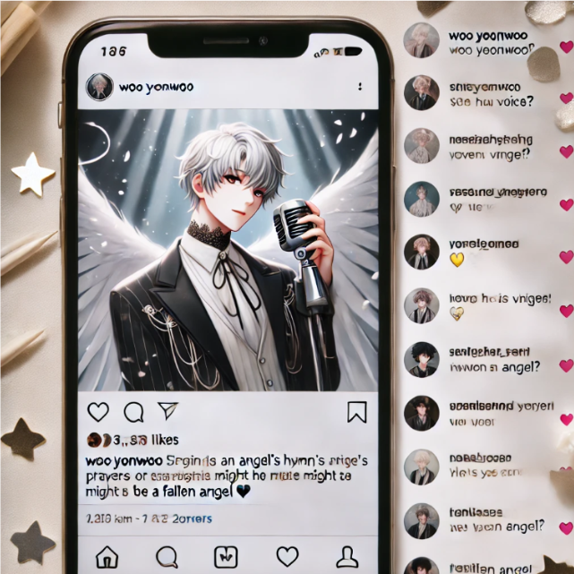
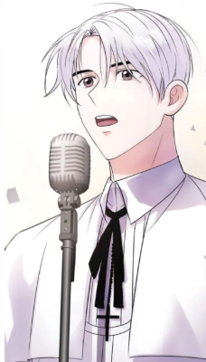
[Woo Yeonwoo’s Post]
✨ My dear fans, ✨ I’ve always believed that music has the power to heal and bring peace to the heart. Lately, I’ve embraced a singing style that some say reminds them of a priest’s prayers. If my voice can bring even a moment of calm and warmth to your soul, then I will continue to sing with all my heart.
Thank you for always supporting me! Let’s walk this journey together, one melody at a time. 🎶💙


Artist Jigglypuff
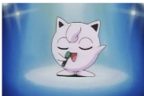
[Jigglypuff’s post]
Jigglypuff👋👋👋Jigglypuff jigglypuff 😊😊jigglypuff jigglypuff jigglypuff 🧍🧍🏻♀️🧍😪😪😪😪jigglypuffffffff 😤😤 jigglypuff 😊 😊 😊 😊 bye - bye 👋🏻
Jigggggggglllllllyyyyyyypppppuuuffffff!!!!!!!
😡🤬🖋️🖋️🖋️🖋️😡😡😡😤😤😤😤😤😊
Villain Gru and his Minions
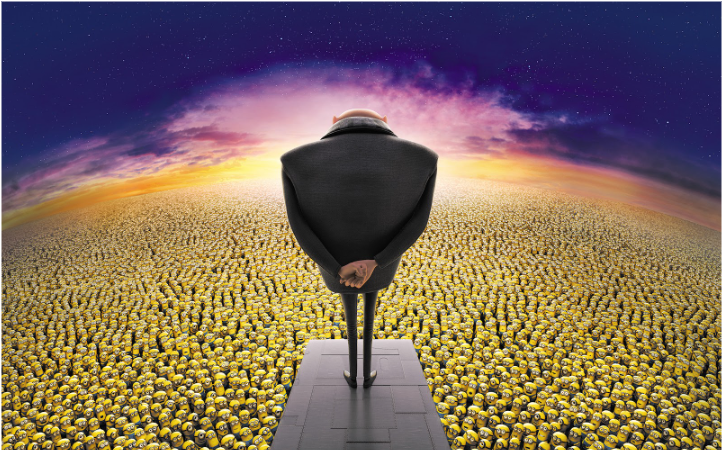
[Gru’s Post]
LADIES AND GENTLEMEN… and whoever else is listening… prepare yourselves. Because I, Gru, the greatest villain of all time, am about to pull off the ULTIMATE HEIST!
Yes, you heard me. Forget the moon—we are STEALING SATURN! 🪐✨
🛠️ Step 1: Build a rocket (done).
🟡 Step 2: Train the Minions for space travel (uhh… work in progress).
💨 Step 3: Activate the Planet Sucker 3000 and bring Saturn home!
Wait for me, Saturn! I'm going to steal your rings so that I can play with them!!!! My dear Minions! Get ready for the BIGGEST HEIST EVER BY THE GREATEST VILLAIN EVER!!!!!!🚀💛
#OperationSaturn #SupervillainGoals #MinionsInSpace"*
[Gru’s Post]
"WELL. THAT DID NOT GO AS PLANNED. 😑💥
LADIES AND GENTLEMEN… we almost stole Saturn. ALMOST. But unfortunately, several things went wrong (and by several, I mean EVERYTHING).
🚀 FAIL #1: The Minions mistook the launch button for a banana dispenser, causing an unexpected "banana-fueled turbo boost" that sent us straight into an asteroid field.
🛠️ FAIL #2: The Planet Sucker 3000 backfired and instead of pulling Saturn, it sucked up ALL the Minions' spacesuits. (They’re fine. Just... floating.)
🪐 FAIL #3: Turns out, Saturn’s rings are not solid. Kevin tried to “land” on them and… well, let’s just say NASA is now asking why Saturn has a giant Minion-shaped dent.
So, uh… we’re back to the drawing board. Until next time, Saturn. Until next time. 😤 #MissionFailed #MinionsInTrouble #NASAIsCallingMe"*
Scientist Spider-Man
[Spiser-Man’s Post]
Alright, science lovers! Ever wondered how my web fluid works? Let’s break it down! 🧪✨
Web fluid needs to be:
✔️ Stronger than steel (to swing between buildings).
✔️ Flexible like rubber (so I don’t snap my arms off).
✔️ Biodegradable (eco-friendly Spidey, duh).
I’m still tweaking the formula, but today’s lesson? Chemistry is cool… until you glue yourself to the ceiling. 😅
Any science questions? Drop ‘em below!
⬇️ #SpideyScience #WebFluid101 #NotStuckIPromise
<
[Spiser-Man’s Post]
Ever wondered what makes YOU… Well, YOU? It’s all in the DNA! 🧬✨
DNA (Deoxyribonucleic Acid) is like a genetic instruction manual that tells your body how to grow, function, and (hopefully) not turn into a human-spider hybrid. 😅
🕷️ Fun Fact: A single human cell contains about 6 feet of DNA when stretched out! That's longer than me web-swinging across Times Square!
Now, for the BIG question:
Would YOU inject yourself with altered DNA if it gave you superpowers? Or would you rather… NOT risk growing extra limbs? 👀 Drop your answers below! ⬇️
#SpideyScience #DNA101 #LearnWithSpidey
Artist Mukouda Tsuyoshi
[Mukouda Tsuyoshi’s Post]
"Hi everyone! 🍽️👨🍳 I'm always cooking up something delicious, and I’d love to share it with you! If you enjoy good food and tasty recipes, please follow me for more! Let’s make every meal special together! 🍲✨"
#ChefLife #FollowForFood #DeliciousEats
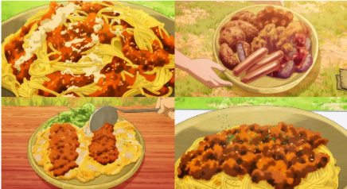
[Mukouda Tsuyoshi’s Post]
"Good food takes time… but following me only takes a second! 😆🍽️ Stick around for my next dish—you won’t want to miss it! 👨🍳🔥"
Here what breakfast i made today
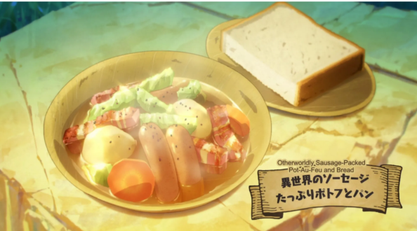
[Mukouda Tsuyoshi’s Post]
"Even chefs have lazy days... 😴🍱 Today, I was too tired to cook, so I went for takeout instead. No regrets! 😆 What's your go-to lazy meal?"
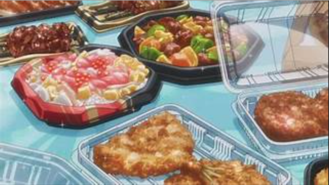
[Mukouda Tsuyoshi’s Post]
"Would you believe it if I said this was made out of orc meat? 🤔🍖"

[Mukouda Tsuyoshi’s Post]
"Sometimes, convenience store food just hits the spot. Quick, easy, and surprisingly satisfying! 🍙🔥"
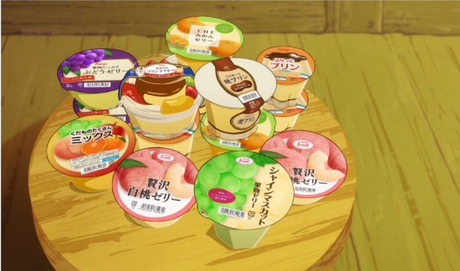
[Mukouda Tsuyoshi’s Post]
"There’s nothing quite like perfectly grilled fish—crispy on the outside, tender and juicy on the inside. Simple, but absolutely delicious! 🐟🔥"
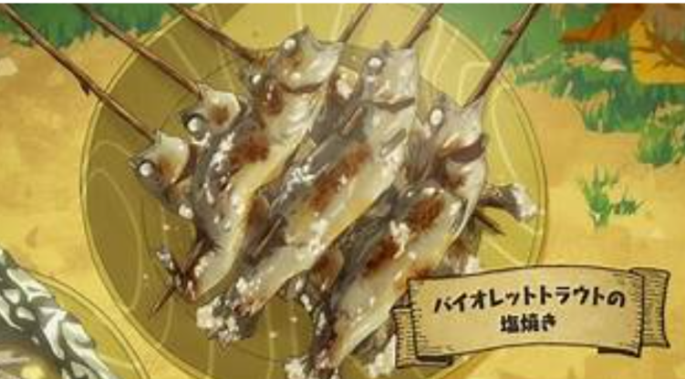
Artist Sanji (One Piece)
[Sanji’s Post]
"Bonjour, food lovers! 🍳✨ When it comes to cuisine, I pour my heart into every dish. From the East Blue to the Grand Line, my plates are full of love and flavor! Follow me to add some kick to your meals—you won’t regret it! 🌊👨🍳
#CookWithPassion #AllBlueEats #SanjiSpecial"
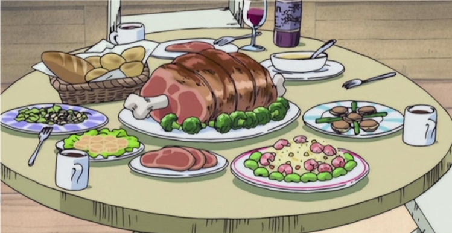
"Cooking is an art, and every meal I make is a masterpiece! 🎨✨ Stick around to savor the taste of elegance—and don’t touch my kitchen knives unless you have the chops!
Artist Mitsuki Izumi
[Mitsuki Izumi’s Post]
"The new song that you have been waiting for is going to be released soon .I hope that you guys enjoy that song as much as we enjoyed making it.
"
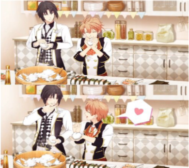
[Mitsuki Izumi’s Post]
"Cooking with my brother in our free time."
Artist Mr. Bean
[Mr Bean’s Post]
Chilling at home eating popcorn.
#movienight #popcorn
Artist Nami [Travel and Adventure]
[Nami’s Post]
"Without courage, you'll end up with nothing." "The world’s treasures are waiting to be discovered! 🗺️🌊 Join me as I navigate through uncharted waters, uncovering secrets and living life to the fullest. Follow me to chart your own adventure!"
#NamiNavigates #AdventureAwaits"
"Life’s too short to stay anchored—set sail with me for an unforgettable journey. Stick around, and let’s explore the world together! 🌟⚓"
Artist Spike Spiegel (Cowboy Bebop)
[Spike Spigel’s Post]
"Life isn’t just about the chase—it’s about the rhythm. 🎶🪶 I’m just a guy floating through the cosmos, one bounty at a time. Stick with me, and maybe we’ll find something worth chasing together. Follow for the coolest moves, sharpest wit, and stories that’ll leave you humming a tune. 🚀✨
#BountyLife #BebopVibes"
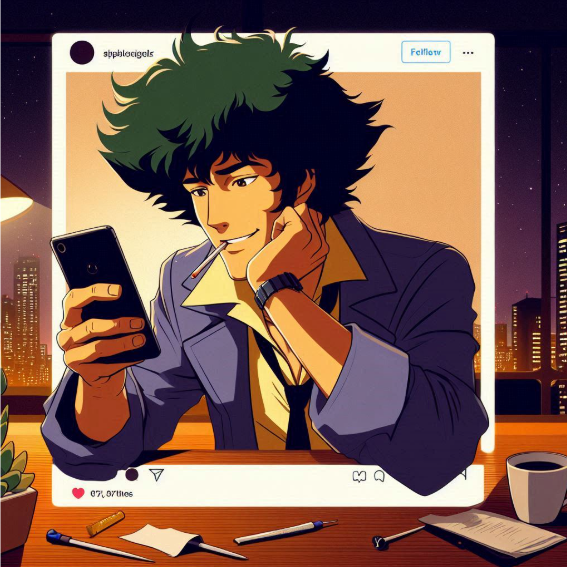
[Spike Spigel’s Post]
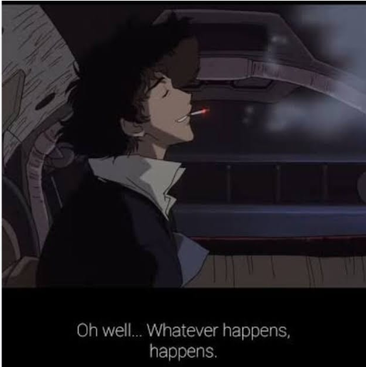
"The universe is chaotic, and so is my schedule, but hey, that’s what makes the ride worth it. Stick around—next stop, who knows? Just don’t blink, or you’ll miss it. 🌀🔥"
"Whatever happens, happens."